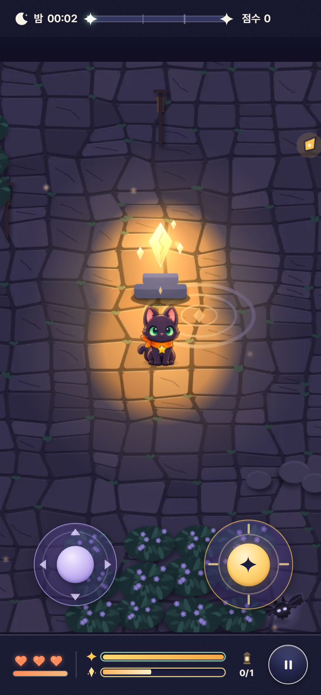
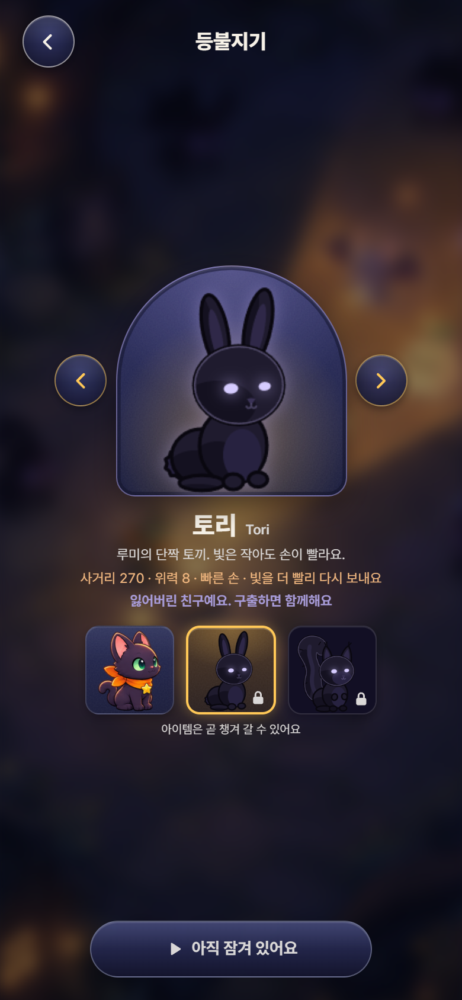
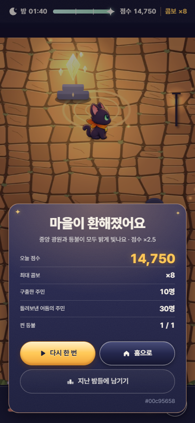
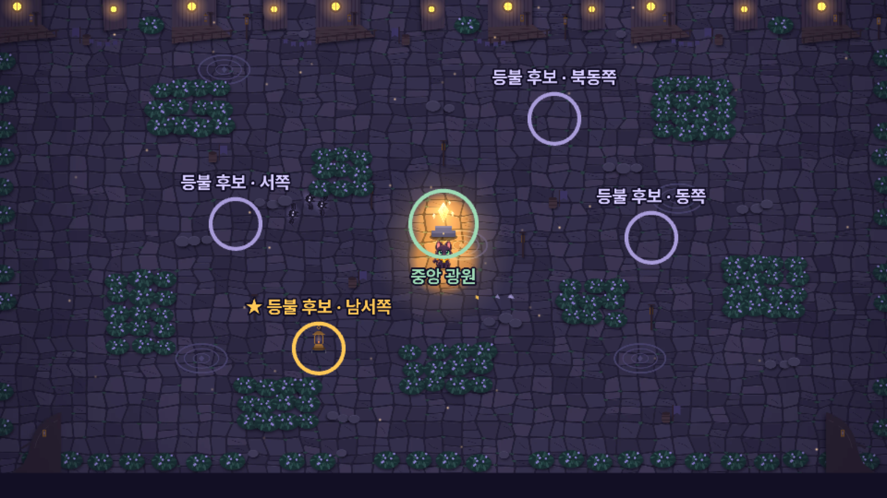

작은 빛으로, 마을을 되찾아요.
개정일 2026-11-12 · 원본: 라이언의 새 기획(XMind 1112) · 이전 기획서(2026-10-28 통합본)와 그 사이 개정을 대체 · 근거: 프로젝트 CLAUDE.md 라이언 지시 기록
이 개정판이 2026-10-28 기획서와 이전 개정 사항을 대체한다. 충돌하면 가장 최근에 수정된 것을 따른다. 옛 본문 중 새 기획과 충돌하지 않는 결정(두 스틱 조작, 가로 화면, 아트 디렉션 등)은 본문에 그대로 옮겼다. 제안은 새 기획에 없던 값을 개발 중 정한 것으로, 휴대폰 체감 후 조정한다. Phase n은 아직 개발 전인 항목이다.



| 항목 | 내용 |
|---|---|
| 장르 | 캐주얼 액션 디펜스 + 로밍·등불 복구. 고양이 루미가 넓은 밤 마을을 돌아다니며 빛을 쏴 중앙 광원을 지키고 외곽 등불을 다시 켠다 |
| 플랫폼 | 웹 브라우저(Firebase Hosting, https://light-defense-game.web.app). 모바일 우선·PC 동시 지원. 웹·모바일 모두 가로가 기본, 세로 제공 |
| 한 판 | 스테이지 약 100초, 끝 = 아침. 진행 70%부터 클라이맥스 |
| 지킬 것 | 맵 가운데 중앙 광원(최후 보루, 꺼지면 게임 오버) + 외곽 등불 스테이션 1~4개(첫 스테이지 1개) |
| 주인공 자원 | HP + 하트 3개 + LP(빛 자원) |
| 핵심 재미 | ① 외곽 등불을 켜러 나갈지 중앙을 지킬지(모두 켜면 맵 전체 광도 버프) ② 콤보를 끊지 않고 점수를 불리는 긴장감 ③ 싸울 뜻이 없는 패시브 주민을 그냥 지나칠지(자비 점수) |
| 주 플레이어 | 틈새 시간 캐주얼: 출퇴근·대기 중 짧은 판 반복, 지인과 점수 비교 |
| 이름 | 동물 | 사거리 / 위력 | 특성 제안 | 해금 |
|---|---|---|---|---|
| 루미 Lumi | 검은 고양이(주황 스카프·초록 눈) | 330 / 10 | 밤눈: 주변 빛 반경 ×1.15 | 기본 |
| 토리 Tori | 토끼(흰 털·민트 리본) | 270 / 8 | 빠른 손: 빛 대기 ×0.8 | 구출 스테이지 Phase 5 |
| 도토 Doto | 다람쥐(붉은 갈색·복슬한 꼬리·황금 도토리) | 300 / 9 | 볼주머니: 아이템 효과 ×1.5 | 구출 스테이지 Phase 5 |
공통: 이동 225, HP 100, 하트 3, LP 10~100, 빛 60° 부채꼴·대기 0.4초(토리 0.32초)·넉백 70·스턴 0.3초. 토리·도토는 루미의 잃어버린 친구라 잠긴 동안 선택 화면에 빛을 잃은 모습(검은 털 + 보랏빛 눈)으로 보인다.
| 무리 | 정체 | 빛으로 HP가 다하면 | 공격 |
|---|---|---|---|
| 잃어버린 빛의 주민 | 빛을 잃고 어둠에 적응한 빛의 마을 주민 | 본래 모습을 되찾아 중앙으로 뛰어가는 몸짓과 함께 사라짐 = 구출(점수 높음) | 루미·광원·등불 |
| 어둠의 호스틸 | 빛을 위협으로 여기지만 영역을 지키려 침입 | 맵 바깥으로 돌아가며 사라짐 | 루미·광원·등불 |
| 어둠의 패시브 | 전투 의지 없이 어둠의 마을·경계를 배회 | 이득 없음(여러 번 공격하면 호스틸 급증 — 분노) | 하지 않음. 길·아이템 자리를 막는다. 공격하지 않고 지나가면 자비 점수 |
| 보스 | 마녀 노월(가칭) | 보스 스테이지 승리 | 보스 패턴 Phase 5 |
| 이름 | 무리 | HP | 속도 | 루미 피해 / 주기 | 광원 피해 | 점수 | 행동 | 상태 |
|---|---|---|---|---|---|---|---|---|
| 박쥐 | 호스틸 | 8 | 150 | 3 / 1.0초 | 0.6 | 100 | 지그재그, 1~3마리 무리, 날아서 장애물 무시 | 구현 |
| 웨어울프 | 호스틸 | 30 | 95 | 10 / 1.4초 | 4 | 150 | 곧게 돌진, 넉백 절반 | Phase 3 |
| 뱀파이어 | 호스틸 | 18 | 120 | 6 / 1.0초 | 3 | 130 | 빛·등불을 피해 돌아감 | Phase 3 |
| 개구리 | 잃어버린 주민 | 16 | 85 | 3 / 1.2초 | 0.8 | 200 | 폴짝폴짝. 구출되면 연둣빛 제 모습으로 중앙 쪽에 뛰어감 | 구현 |
| 고슴도치 | 잃어버린 주민 | 22 | 70 | 6 / 1.2초 | 3 | 220 | 곧게 | Phase 3 |
| 레서판다 | 잃어버린 주민 | 14 | 115 | 4 / 1.0초 | 2 | 200 | 지그재그 | Phase 3 |
| 올빼미 · 나방 · 반딧불이 | 패시브 | 6~10 | 40~55 | — | — | 자비 300 | 배회, 빛을 피하는 몸짓, 한 줄 대사 | Phase 3 |
| 마녀 노월 | 보스 | 200 | 50 | — | — | 1000 | 보스 패턴 | Phase 5 |
수치는 모두 제안. 적 AI: 루미가 보이고 480 안이면 루미, 아니면 가장 가까운 광원(중앙·켜진 등불)을 노린다. 붙으면 주기마다 피해(밀려났다 다시 붙어도 주기를 지킴). 빛에 닿을 때의 반응(움찔·눈 가림·느려짐·등불 피하기)과 적의 필살기(속도 스턴·체력 밀어냄·광도 깎기·방어)는 Phase 3. 패시브 대사: "너무 밝아..", "싸우기 싫어..", "저 빛이 무서워", "우리도 여기서 살고 있어".
| 입력 | 동작 |
|---|---|
| 왼쪽 스틱 / WASD·방향키 | 걷기(속도 225). 장애물·광원 받침·등불 밑동은 지나갈 수 없다 |
| 오른쪽 스틱 끌기 / 마우스 누른 채 끌기 | 루미의 중심에서 60° 원뿔 범위(밝은 노랑 50%, 선 없음)가 바닥에 보인다. 반지름 = 끈 거리에 비례(스틱 0~1 × 사거리, 마우스 = 커서까지 거리). 걸으면서도 조절 |
| 놓기 | 그 방향·그 길이로 발사. 다음 발사까지 0.4초 |
| 짧게 탭 | 반자동: 사거리 안의 가장 가까운 적에게. 사거리 안에 적이 없으면 쏘지 않는다(LP도 쓰지 않음) |
| 취소 | 끌었다 가운데로 되돌려 놓기 / 마우스를 루미 위(48 안)에서 놓기 |
| 스틱 좌우 바꾸기 | 설정 Phase 6 |
0~100 연속값을 4단계로 나눈다: 25 미만 낮음 · 50 미만 중간 · 75 미만 밝음 · 그 이상 크게 밝음.
| 대상 | 규칙 |
|---|---|
| 중앙 광원 | HP와 광도를 나눈다(11-14): 게이지 = HP, 밝기(광도) = HP 비례. HP 가득으로 시작해 적이 붙으면 줄고(빛·시간으로 회복 없음), 꺼진 등불을 켤 때만 +8, HP 0 = 꺼짐 = 게임 오버 제안 |
| 등불 스테이션 | 게이지 = HP, 밝기 = HP 비례(11-14). 꺼짐(HP 0) → 빛을 한 번 맞으면 0.8초 뒤 켜짐 = HP 가득(+ 중앙 광원 +8) → 켜진 동안은 빛으로 회복 없음, 저절로 초당 1.3씩 줄고 적에게 맞으면 광원 피해 × 0.6씩 줄어 HP 0이면 다시 꺼짐(그때만 다시 켤 수 있음) 제안 |
| 맵 전체 | 진행할수록 점점 빨리 밝아진다(0.55 × 진행²). 모든 등불이 켜지면 ×1.35 버프. 중앙 광원이 맞으면 크게, 루미가 맞으면 조금 어두워지고(클라이맥스에는 더 크게) 서서히 회복 제안 |
| 루미 주변 | LP에 비례해 넓게 밝힌다. 진행할수록 넓어짐 |
| 지역 | 빛의 마을 낮음→크게 밝음, 경계 중간 그라데이션, 어둠의 마을 낮음→중간 Phase 2 |
60° 부채꼴이 쏜 자리에서 0.25초에 퍼지며 앞쪽 가장자리가 닿는 순간 한 번씩 맞힌다. 맞히는 것: 적과 꺼진 등불. 장애물은 빛을 막지 않는다. 위력 = 캐릭터 위력 × LP 약해짐.
| 항목 | 내용 |
|---|---|
| 흐름 | ① 첫 화면이 중앙 광원과 루미를 비춘다(루미는 빛기둥 속에 나타남) ② 0~70%: 어두운 마을을 로밍하며 적을 돌려보내고 구출하고, 외곽 등불을 켤지 중앙을 지킬지 고른다 ③ 70%~ 클라이맥스: 적이 크게 늘고 광도 변화가 커진다 ④ 아침: 마을이 켜지고 남은 적이 물러난다 |
| 시간대(연출) | 0~40% 초저녁 · 40~70% 한밤중 · 70%~ 새벽 전(클라이맥스) · 끝 = 아침 |
| 1스테이지 | 빛의 마을, 100초, 등불 1개. 평소: 동시 최대 3, 생성 간격 4.0→3.0초, 박쥐 3 : 개구리 1(처음 6초는 박쥐만). 클라이맥스: 동시 최대 6, 2.4→2.0초, 박쥐 3 : 개구리 2. 첫 스테이지는 쉽게(라이언) 제안 |
| 스테이지 진행 | 맵 3종 = 스테이지 테마(빛의 마을·경계·어둠의 마을), 오를수록 등불 1→4개, 구출 스테이지에서 토리·도토 해금, 노월 보스 스테이지 Phase 5 |
| 결과 | 조건 | 화면 문구 |
|---|---|---|
| 기본 승리 | 아침에 하트 1개 이상 + 중앙 광원 켜짐 | 아침이 왔어요 / 중앙 광원을 지켰어요 · 남은 하트 {n}개 |
| 완전 승리 | 아침에 중앙 광원이 '밝음'(HP 50%) 이상이고 모든 등불이 켜져 있음(11-14) → 총점 ×2.5 제안 | 마을이 환해졌어요 / 중앙 광원과 등불이 모두 밝게 빛나요 · 점수 ×2.5 |
| 게임 오버 | 하트 0 또는 중앙 광원 꺼짐 | 오늘은 여기까지 / 버틴 시간 · 구출한 주민 (광원이 꺼지면 "중앙 광원이 잠들었어요") |
| 보스 스테이지 | 보스 HP 0이면 승리 Phase 5 | — |

| 점수 | |
|---|---|
| 등불 켜기 | 50 |
| 호스틸 돌려보냄 | 적 점수(박쥐 100) |
| 잃어버린 주민 구출 | 적 점수(개구리 200) |
| 자비 | 300 |
| 보스 | 1000 |
| 아침까지 | +500 |
| 완전 승리 | 총점 ×2.5 |
콤보: 구출·돌려보냄마다 +1, 3초 안에 다음이 없으면 끊김(0). 배율 1 + ⌊콤보÷5⌋×0.5(최대 4)가 유지 중 얻는 모든 점수에 붙는다. 5·10·20·30마다 금빛 "콤보 ×N". 제안
자비: 어둠의 패시브 주민 곁에서 공격하지 않고 지나가면 자비 점수. 횟수 제한 없음(같은 주민은 멀어졌다 다시 와야 다시 판정). 패시브를 여러 번 공격하면 호스틸 스폰이 늘어난다(분노) Phase 3
| 아이템 Phase 4 | 효과 제안 |
|---|---|
| 바람 깃털 | 이동 ×1.35, 8초 |
| 별 목걸이 | 적 이동 ×0.7, 8초 |
| 반딧불 병 | LP +35 |
| 황금 도토리 | 구출한 주민 2명이 10초 함께 싸움 |
| 빛의 부적 | HP·LP +25, 스테이지마다 1개 기본 |
장착물은 없어지고 아이템이 대신한다. 모두 소모형: 시작 전에 챙기고 맵에서도 얻으며 1회 사용. 광도 '중간' 이상 구역·등불 둘레·경계에서 자주 나오고, 등불이 모두 꺼졌거나 광원에 적이 몰리면 가까운 곳에만. 바닥에는 최대 3개.
| 화면 | 구성 |
|---|---|
| 스플래시 | 흐린 홈 그림·일렁이는 등불·금빛 로고·불러오기 막대, 최소 1.2초 |
| 홈 | 로고 + 슬로건 "작은 빛으로, 마을을 되찾아요." · 게임하기 · 지난 밤들 · 상점 · 튜토리얼(언제든 다시) · 테스트(연습장) · ⚙. 첫 플레이는 튜토리얼 스테이지 필수, 이야기 카드는 건너뛰기 |
| 캐릭터 선택 | 아치 속 큰 초상, 좌우 화살표, 이름·소개·사거리·위력·특성, 3칸 명단. 잠긴 친구는 빛을 잃은 모습 + "잃어버린 친구예요. 구출하면 함께해요". 버튼 "빛을 밝혀요". 아이템 챙기기 Phase 4 |
| 플레이 HUD | 위 한 줄: 달 · "밤 mm:ss" · 민트 진행 바(한밤중·클라이맥스 눈금) · 점수 · 콤보. 아래 띠: 하트 3개 + HP 막대 · 빛(LP) 막대 · 중앙 광원 막대(낮으면 잔불 맥박) · 켠 등불 수 · 일시정지. 양쪽 엄지 자리에 두 스틱. 화면 밖 적은 라벤더 화살표, 꺼진 등불은 호박빛 마름모 |
| 결과 | 오늘 전투 개요: 제목·부제(6절), 통계 오늘 점수 · 최대 콤보 · 구출한 주민 · 돌려보낸 어둠의 주민 · 켠 등불. 다시 한 번 / 홈으로 / 지난 밤들에 남기기 |
| 설정 | 배경음악·효과음·진동, 닉네임, 조작 안내. 추가: 음량, 가로/세로, 스틱 좌우 바꾸기 Phase 6 |
| 지난 밤들 · 상점 | 오늘·이번 주·전체 랭킹(지금은 이 기기 안) / 상점 "준비 중"(수익 모델: 아이템 샵·광고·기부) |
| 계층 | 선택 |
|---|---|
| 클라이언트 | Phaser 3.90 · TypeScript 5 · Vite · Vitest. 2D 스프라이트 + 깊이 정렬 + 빛 오버레이(2.5D) |
| UI | 메뉴와 HUD는 캔버스 위 HTML/CSS 오버레이(프레임워크 없이 TS), 게임과는 이벤트로만 연결 |
| 데이터 | 밸런스 수치는 전부 JSON(src/data/), 순수 로직은 Phaser 없이 테스트 |
| 서버 | Firebase: Hosting(https://light-defense-game.web.app), Authentication·Firestore(서울) 랭킹은 핵심 플레이 검증 뒤. 지금 랭킹은 이 기기 안 |
| 단계 | 목표 | 상태 |
|---|---|---|
| Phase 0 | 기존 코드 감사 | 완료 11-12 |
| Phase 1 | 핵심 판: 중앙 광원·등불 1·루미 HP/하트/LP·박쥐·개구리·100초 승패·HUD·결과 | 완료 11-12 (라이브) |
| Phase 2 | 광도 모델 완성·등불 여러 개·전체 버프·지역 3구획·강·다리·울타리·건물·풀숲 은신 시간 | |
| Phase 3 | 적 무리 차별화(호스틸 3·잃어버린 주민 3·패시브 3), 빛 반응, 필살기, 자비·분노·대사, 클라이맥스 연출 | |
| Phase 4 | 아이템 5종, 점수·콤보, 완전 승리 보상, 결과 요약 | |
| Phase 5 | 맵 3종(스테이지 테마), 스테이지 진행(등불 1→4), 토리·도토 구출·해금, 노월 보스 스테이지 | |
| Phase 6 | 튜토리얼·설정(음량·스틱 좌우·휴대폰 방향)·사운드·모바일 마무리 |
한 Phase를 끝내고 검증·보고한 뒤 다음으로 간다. 세부 수치·작은 설계는 개발 중 정해 제안으로 표시하고, 큰 방향만 라이언이 정한다.
| 날짜 | 내용 |
|---|---|
| 10-28 | 통합 기획서(가칭): 탭 한 번으로 빛을 보내 하룻밤 120초 동안 등불을 지키는 세로 아케이드 디펜스. 서버는 Firebase로 전부 대체, 메뉴·HUD는 HTML/CSS 오버레이 |
| 10-30 | 아트 디렉션을 레퍼런스 그림(reference/ChatGPT-Images/)으로: 작은 동물들의 밤 마을, 남색과 호박빛 대비. Super Animal Royale 같은 평평한 톱다운은 피함 |
| 11-04 | 조작을 브롤스타즈식 두 스틱으로(이동·빛), 넓은 마을 + 카메라 따라감, 풀숲·장애물. 루미 8방향 모습 |
| 11-06 | 루미 중심의 원뿔(반지름 = 끈 거리 비례), 사거리 1.5배, 이동 225, PC 마우스 끌어 놓기, 가로 화면(마을 16:9 3200×1800), 첫 스테이지 쉽게 |
| 11-12 | 새 기획(XMind 1112)으로 전면 개편: 중앙 광원 + 등불 스테이션, 루미 HP·하트·LP, 광도 4단계, 100초 스테이지와 클라이맥스, 적 세 무리(구출·돌려보냄·자비), 장착물 → 아이템, 시너지·대광원 없앰, 캐릭터 3명(도토는 다람쥐), 반자동은 대상이 없으면 쏘지 않음, 맵 3종 = 스테이지 테마, 게임 오버 "오늘은 여기까지". Phase 1 완료·라이브 반영. 자비는 어둠의 패시브 주민 대상(확정), 잃어버린 주민은 구출되면 중앙으로 뛰어가는 몸짓과 함께 사라짐, 정해진 에셋(루미) 외 그림은 임시 그림을 직접 그림 |
| 11-13 | 팀 컨셉 시연판 — 전체 Phase를 가볍게 한 번: 스테이지 1~4(등불 1→4, 테마 3종 색조, 노월 보스) · 튜토리얼 필수 · 연습장(스타파크식 테스트) · 적 세 무리 9종(호스틸 역할, 자비·분노, 패시브 대사) · 토리·도토 구출 해금 · 아이템 5종(칸 2개) · 미로 벽·울타리 · 풀숲에 4초 넘게 있으면 들킴 · 이야기 카드 · Web Audio 합성 사운드. 수치·문구는 모두 제안(CLAUDE.md 2·3절) 제안 |
| 11-13 | 시연 뒤 다듬기: 꺼진 등불·위험한 광원·빛을 잃은 친구를 노란 화살표로 가리킴(화면 밖이면 가장자리에서, 화면 안이면 그 위에서 — 옛 '호박빛 마름모'는 무엇인지 알기 어렵고 화면 안에선 안 보였음), 아이템 칸은 누르는 순간 사용(이동 중에도), 하단 게이지에 HP·LP 글자, 판이 끝나면 등불지기가 정면 정지 자세로 섬, 컨셉 시연판 수치를 데이터 파일로 옮김 |
| 11-13 | 그림·소리·지도·밸런스 보강: 모든 생명이 방향별로 걷고 나는 임시 그림(토리·도토 8방향, 적 옆·앞·뒤, 노월 시전·진정), 중앙 광원을 세 단 제단 + 금 간 큰 결정으로 장엄하게, 등불 1.5배, 광원·등불 광도 게이지를 그림 위에, 적은 몸박치기로 공격(보랏빛 파편), D장조의 은은한 배경음(OneShot 분위기 참고), 오두막 7채·강·다리 3개·울타리·바위, 밸런스를 실력 단계별 자동 플레이로 재어 조정(1스테이지는 쉽게, 4스테이지가 가장 어렵게) 제안 |
| 11-13 | 장애물(오두막·담·울타리·등불 기둥·바위·술통·중앙 광원·등불) 뒤에 등불지기가 있으면 그 물체가 반투명해짐 · 홈에 튜토리얼 버튼(이미 해 본 유저도 다시, 튜토리얼은 언제나 간추린 이야기부터 — 건너뛰기 = 바로 판) · 게임 밖 화면에서 당겨서 새로고침(직접 만든 몸짓)과 뒤로가기 = 앞 단계로·앞으로가기 = 다시 그 화면으로(게임 화면으로는 넘어가지 않음, 게임 중엔 무시, 홈에서는 한 번 더 누르면 나감) · 태블릿 가로·세로 확인(덜 넓은 가로 화면은 아래 판을 바닥 가운데에, 스틱은 그 위로) |
| 11-14 | 폰 가로에서 두 스틱을 안쪽으로(엄지가 편하게) · 중앙 광원·등불의 HP와 광도를 나눔(게이지 = HP, 밝기 = HP 비례) — 광원은 가득으로 시작해 빛·시간으로 회복 없음, 등불은 켜면 가득·저절로 줄고(초당 1.3)·켜진 동안 빛으로 회복 없음, 꺼진 등불을 켜면 중앙 광원 +8 · 점화 1.2 → 0.8초 · 잃어버린 주민은 빛을 찾아 광원으로 · 광원 피해 ×2.2(늑대는 결계 뒤 3.8로), 등불 ×0.6, 노월 구슬 6 · 완전 승리 = 광원 '밝음' 이상 + 모든 등불 켜짐 · 알림 "등불이 꺼졌어요"·"· 중앙 광원 +{n}" |
| 11-14 | 적의 이동 경로·플레이어의 동기·등불의 존재 이유: 켜진 등불의 결계(밝기 비례 둘레 — 대부분의 적이 피해 돌아가고, 흐려지면 다가와 공격, 뱀파이어는 예외) · 켜진 등불 쪽에서 적이 덜 나오고 어두워질수록 다시 늘어남 · 아이템은 대부분 켜진 등불 빛 안, 패배 위험이면 루미 곁에 곧 · 등불 자리를 중앙에서 약 470으로 · 루미가 맞으면 반대쪽으로 확 젖혀지며 움찔(흰 번쩍임 뒤 붉게) |
| 11-14 | 홈 '테스트' → "테스트할 밤을 골라요" 창에서 연습장·처음 밤·1~4스테이지 중 골라 바로 플레이(잠금 무관, 진행·지난 밤들에 남지 않음, 결과의 다시 한 번·다음 밤으로도 테스트로) |
| 11-14 | 테스트 판은 모두 정식 판처럼 끝이 있게 · 연습장 → 순수 테스트: 시작 전에 '적 있게'(적 조금, 아침이 오면 끝) / '적 없게'(적 없음, 끝없음 — 새 스테이지 sandbox)를 고름 |
| 11-14 | 테스트 최종 정리(라이언 정정): 홈 > 테스트 = 트라이얼(루미 시작 자리 가까운 구석에 적 7종이 제자리에 고정된 연습장 — 움직이지도 공격하지도 않고 쓰러지면 2.5초 뒤 같은 자리에, 끝없음, 브롤스타즈 스타파크 참고) + 각 스테이지 체험(처음 밤·1~4스테이지 실제 판, 끝 있음). 앞의 '순수 테스트(적 있게/없게)'는 없앰 |
이전 원본: reference/라이트_디펜스_게임개발기획서(가칭).pdf(2026-10-28)와 라이언의 XMind reference/light-defense-xmind-1112.pdf는 그대로 보관한다.